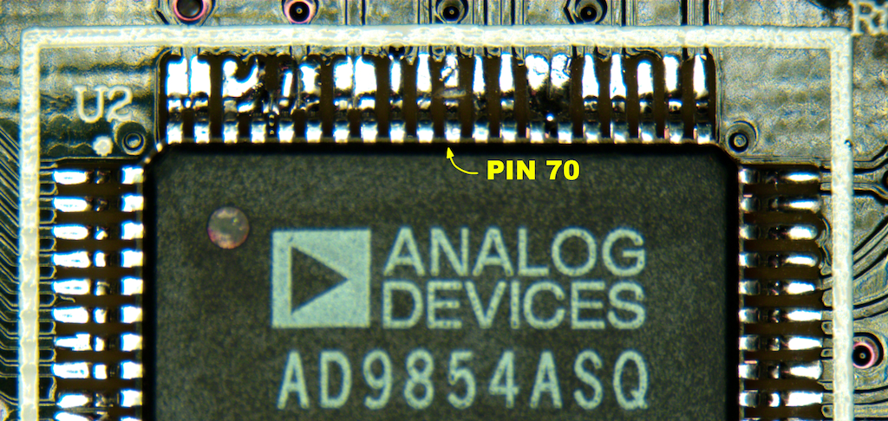
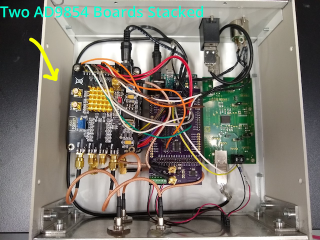

Assembly instructions
Prepare the AD9854 Board
The original evaluation board from analog devices is no longer sold, instead we buy boards from amazon or ebay, that could be found by searching for ad9854. The boards look like this:
to use this board you first need to make sure that pin 70 “S/P Select” is set to serial programming mode (LOW),
To do this, take off the heatsink and expose the AD9854 chip (left), using a razor blade break the pin (right)

Set the Timer W1 Jumper into the left most position:
Remove the resistor R1 from the board and replace the capacitor C3 with a short (0 Ohm SMD resistor).
Finally, reapply thermal paste to the chip and reinstall the heatsink.
Solder the Arduino Shield
To set up communication between the Arduino Due and the AD9854 boards we use a shield, which can be ordered from: OSHParK board link
The shield needs to be populated. Solder: - headers (2.54 mm spacing, single and double row) - screw terminals (TE Connectivity 282834-2) - jack receptacle (Cinch Connectivity 131-3701-261) - voltage regulator (LT1587CT) - oscillator crystal (Abracon ASTX-H11-20.000MHZ-T, 20MHz) - flip-flop (TI SN74HC174) - resistors (330 Ohm, 0 Ohm) - capacitors (Tantalum 10 uF, 100pF ceramic)
You can ensure a good fit to the Arduino if you solder the headers with the shield in place, just make sure not to overheat the Arduino (be quick and minimize soldering iron heat).

Prepare the USB isolator:
- Remove jumper JP3
- Set input jumper to SEL/USB
- Set jumper JP2 to 2-3
- Set jumper JP5 to “Full SPD”
Put everything together:
- Using spacers mount the AD9854 boards
- Mount the ADUM4160 USB isolator
- Mount the Arduino board with the acbox shield
- Connect the shield headers to the AD9854 boards with jumper cables
- Connect the BNC feedthroughs to AD9854 outputs
- Connect the USB cables
- Connect the Power terminals between the AD9854 and Arduino shield
Assembled ACBox
